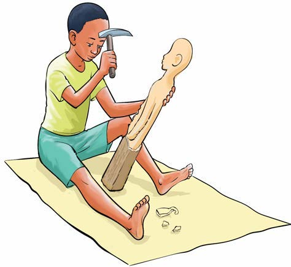
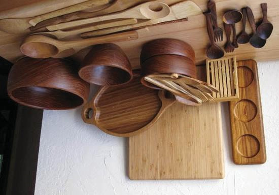

Kuchonga ni kutengeneza kitu au vitu vyenye maumbo mbalimbali kwa kutumia kipande cha mti au jiwe. Vifaa vinavyotumika katika kuchonga ni pamoja na patasi, tesa, tupa, kisu na msasa. Baadhi ya vitu vinavyotengenezwa kwa kuchonga ni kama vile mwiko, kikombe, bakuli na kinyago.
Kuchonga. Kuchonga ni kutengeneza kitu au vitu vyenye maumbo mbalimbali kwa kutumia kipande cha mti au jiwe. Vifaa vinavyotumika katika kuchonga ni pamoja na patasi, tesa, tupa, kisu na msasa. Baadhi ya vitu vinavyotengenezwa kwa kuchonga ni kama vile mwiko, kikombe, bakuli na kinyago.
Chunguza picha, kisha jibu maswali yafuatayo:

1. Kazi ya uchongajiMchongaji akichonga kinyago cha binadamu.

2. Vifaa vilivyochongwaVitu mbalimbali vilivyochongwa kama vile kinu, bakuli, mwiko, sahani, kikombe na uma.Vitu vingine vilivyochongwa kama vile bakuli, vijiko, mwiko na vibao vya mbao.
Maswali
Shughuli ya nne
Chonga kitu kimoja unachokipenda kwa kutumia kipande cha mti kutoka kwenye mazingira yako.